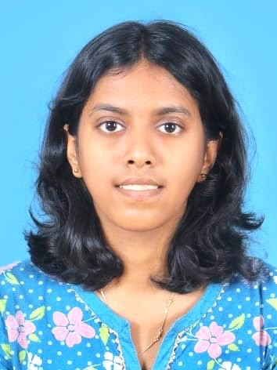

Electrical & Computer Engineering Student
Exploring the intersection of engineering, curiosity, and creativity—one project, one idea, and one lesson at a time. Welcome to my digital journal, where I document my journey through learning, building, and growing..
Explore My JourneyA reflection on why I decided to document my engineering journey and learning process.
Read Entry →Thoughts, experiences and lessons from the beginning of my engineering journey.
Read Entry →What I learned while researching high-power LEDs and projection systems.
Read Entry →
Electrical & Computer Engineering Student
College of Engineering Trivandrum (CET)
Started B.Tech at CET
Joined AstroCET
Joined IEDC CET
Started Arya's Journal
Building impactful engineering projects
Member of AstroCET, IEDC CET and SCORE@CET. Passionate about engineering, innovation, space technology and lifelong learning.
Welcome to my digital journal.
I created this space to document my journey as an engineering student,
share my thoughts, record lessons learned, and showcase projects that inspire me.
This blog isn't about being an expert. It's about learning publicly,
experimenting, making mistakes, improving, and growing one step at a time.
Through engineering, creativity and curiosity,
I hope to build meaningful projects and connect with people who enjoy learning as much as I do.
This journal is my digital notebook—a place where I document projects, lessons, ideas, and the small moments that shape my engineering journey.I don’t claim to know everything. Instead, I choose to learn openly, build consistently, and share the process along the way.
Every project, every mistake, and every discovery adds another page to this story.
📧 aryalekshmis2006@gmail.com